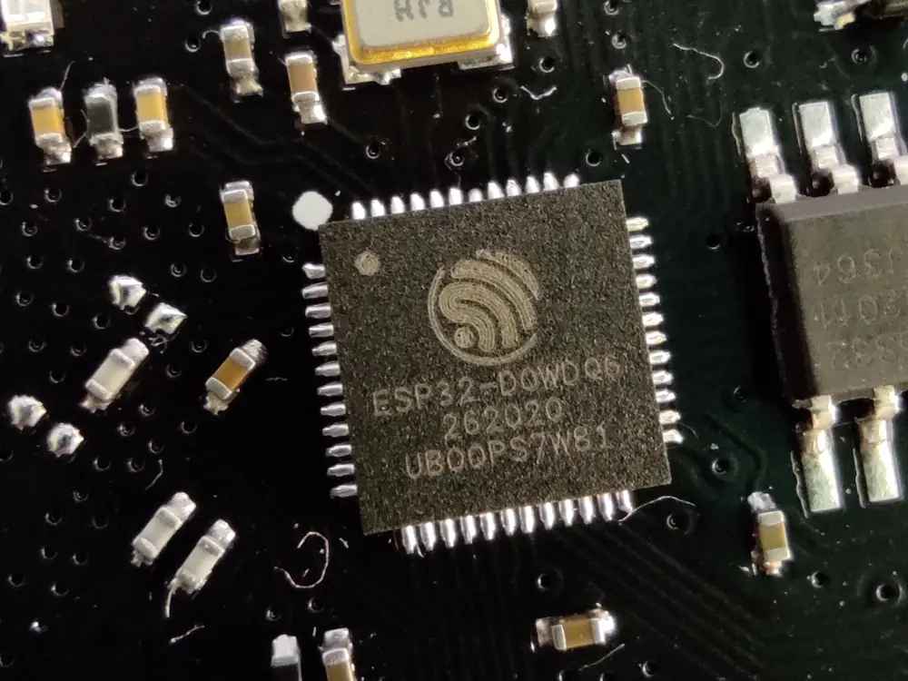

ESP32
240 MHz · 520 KB SRAM · no MMU
The sensor itself. Wi-Fi and Bluetooth on the die, a few hundred kilobytes to work in, and a power budget measured in tenths of a watt. This is the class Roger Edge is specified against: a fixed-label classifier and the layer around it, down where the signal is.